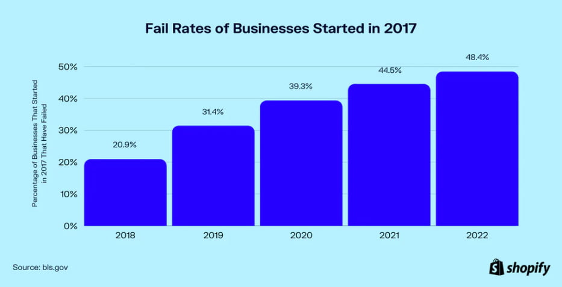

MENU
Product development focused on speed to market



A poor user experience, a lack of market need, and a loss of focus are also among the most significant reasons why startups fail.
Prioritizing speed to market when developing digital products
Our Rapid Product Development Process
We have enabled startups to succeed:

Speed

Expertise

Leadership
1. What is Endeavor's rapid product development strategy?
2. What is a “speed to market” timeframe?
3. What is the cost of rapid product development?
4. How does Endeavor ensure a rapid build delivers results?
Identifying Challenges and Risk Mitigation
Every time we approach custom software development, we have a birds-eye view of the project before a single line of code is written.
The team identifies the main challenges of the product and anticipates how we will address them at each stage. We incorporate the major obstacles into our overall project strategy, architecture, and roadmap to ensure that development proceeds smoothly. Risks associated with software development often involve unforeseen complications and scalability issues.
- Industry-specific compliance requirements
- Complex user needs
- Integration of difficult technologies
- Additional stakeholders
Determine the feasibility of a speed-to-market build
The feasibility of building your product in the time allocated is another prime consideration before embarking on a rapid product development effort. Almost always, it is better to rethink, delay, or terminate a product than to rush it out the door and see it fail. In a software development project, the Endeavor team applied lean methodologies in order to assist the company in determining whether building specific functions would be of value to their customers. We worked closely with their team to distinguish nice-to-haves from need-to-haves by using rapid prototyping to test the overall product hypothesis, and ultimately determined the feature was not the right fit for user needs. This decision enabled Fundwise to save 77% of its budgeted amount.
“I have never worked with a team like Endeavor before. Each stage of the development process
is
managed by them, and their speed reflects their extensive experience.”
Corey Price
CMO & Co-Founder of Fundwise
Book a meeting
Building a digital product?